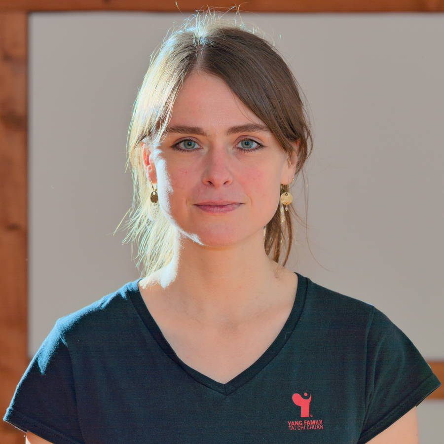

Der Yang Family - Tai Chi Dao Köln e.V. wird von Christian Hoppe (1. Vorsitzender), Katrin Wälz (stellv. Vorsitzende) und Ingrid Noreiks (Schatzmeisterin) geleitet.
Er ist aus dem Yang Chengfu Tai Chi Chuan Center Köln unter der Leitung von Frank Grothstück hervorgegangen. Jetziger Center Director am Standort Köln gegenüber der Yang Family Tai Chi Association ist Klaus Krummenauer.
interessiert sich seit seiner Jugend für die Kampfkünste. Seit über 20 Jahren übt er die Bewegungskunst des Tai Chi Chuan der Yang Familie, welche er von Frank Grothstück lernt. Regelmäßig besucht er Seminare bei Großmeister Yang Jun. Vor 10 Jahren legte er die Prüfung zum 4. Rang (Copper Tiger) ab und ist seit 2013 als Certified Instructor der International Yang Family Tai Chi Chuan Association anerkannt.
Von 2014 bis 2018 absolvierte er die 1. Systematische Nei Dan Gong Ausbildung der Europäischen TaijiDao Gesellschaft e.V. (ETG e.V.) unter der Leitung von Tobias Puntke zum Lehrer für Nei Dan Gong (Ausbildungsstufen 1-4) und besucht dort regelmäßig Seminare bei Großmeister Shen Xijing. Die Ausbildung setzt er seit 2018 bis heute fort.
Der Mensch und seine Gesundheit stehen bei seinem Training im Mittelpunkt, wobei er den Fokus auf das Wohlbefinden und den Spaß an der Bewegung legt.
Katrin Wälz
Katrin Wälz (Jahrgang 1978) begann 2009 mit dem intensiven Training des Tai Chi Chuan im Yang Chengfu Tai Chi Chuan Center Köln und erlernte Hand-, Schwert-, Säbelform und Tuishou von Frank Grothstück.
Sie ist zertifizierte Schülerin von Meister Teng Jian, von dem sie die Daoyin-Form 'Das Spiel der Fünf Tiere' lernte.
Von 2010 bis 2020 war sie für das Yang Chengfu Tai Chi Chuan Center Köln tätig, ab 2013 unterrichtete sie dort. 2014 legte sie die Prüfung zum 4. Rang (Copper Tiger) ab. Seit 2020 ist sie zertifizierte Lehrerin (Associate Instructor) der Yang Family Tai Chi Chuan Association.

Christian Hoppe
praktiziert und unterrichtet seit über vierzig Jahren Yang Tai Chi (z.B. beim Asta-Sport der Universität Köln und in verschiedenen Betriebssportgruppen).
Zunächst lernte er bei einem Schüler von Klaus Mögling, bis er auf Frank Grothstück und die Yang Familie traf. In mehreren Seminaren lernte er noch direkt von Meister Yang Zhenduo und vertiefte seine Kenntnisse des Yang Tai Chi in vielen Seminaren mit dessen Enkel, Meister Yang Jun. Er praktiziert die Handformen sowie Säbel und Schwert, und übt auch regelmäßig mit dem Langstock. Das Tuishou, das er in unserem Verein in der Görresstraße unterrichtet, liegt ihm besonders am Herzen.
Von weiteren Meistern und Lehrern hat er sich über die Jahre einiges aus dem Bereich des Qigong angeeignet (u.a. die Ba Duan Jin und Shibashi). Frank Grothstück lehrte ihn außerdem die Sun-Stil-Form von Sun Lutang.
Seit seinem Ruhestand 2023 freut er sich darauf, dem Tai Chi und den inneren Kampfkünsten noch viel mehr Zeit widmen zu können und sie weiterhin vielen Menschen nahezubringen.
Frank Grothstück
Der ehemalige Gründer der ersten Tai Chi-Schule in der Görresstraße bietet nach seinem Wegzug aus Köln noch hin und wieder Wochenendseminare oder Einzelunterricht in seiner neuen Heimat im hessischen Ottrau an.
Wenn ihr euch über Frank und seine Angebote informieren möchtet, könnt ihr ihn per E-Mail erreichen.